Atenção! Você deverá possuir conta no GitHub e a ferramenta Git instalada
em seu computador e conectada ao VSCODE, para realização desta atividade.
PARTE I
- Primeiramente crie um repositório no seu github. Já dentro do github acesse
"Repositories" e clique no botão denominado "New", localizado na parte superior da tela à direita.
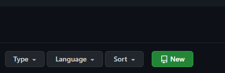
- Insira um nome para o repositório (ex: teste), descrição (opcional) e deixe-o público.
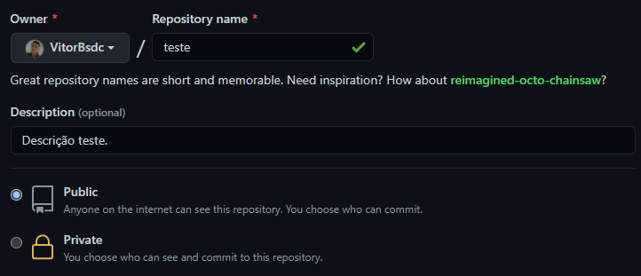
- Após as fases antecendentes clique em "Create repository". E pronto! Primeira parte finalizada com sucesso.
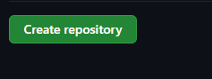
PARTE II
- Agora acesse o gerenciador de arquivos do seu computador e crie uma pasta.
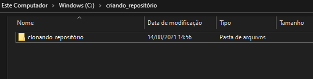
- Em seguida abra a pasta pelo "Git Bash here", (clique com botão direito do mouse sobre a pasta e irá surgir a opção). Caso não tenha logado
em seu git use os seguintes comandos iniciais: git config --local name.user "nome usuário" // git config --global name.email "nome@gmail.com"
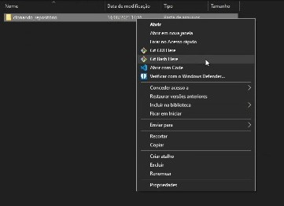
- Já com o Git Bash aberto use o comando a seguir (sem as aspas): " git clone https://github.com/ nome de usuário / repositório.git ".
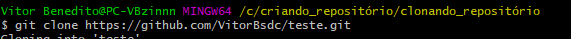
- Após já com o seu Git Bash sincronizado ao VSCODE use o comando " code . " para abrir o VSCODE.
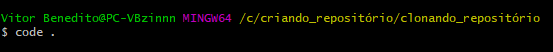
- No VSCODE crie um novo arquivo chamado " index.html ". Edite ao seu gosto e salve.
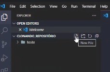
- Após criar e editar seu arquivo, volte ao Git Bash e use o comando " git status ", (comando para verificar status do repositório).
- Após use o comando " git add nome do arquivo ". para adicionar um arquivo em especifico, (ex: git add index.html).
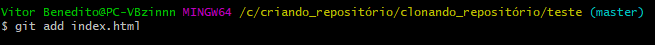
- Depois utilize o comando " git commit -m comentário " para comitar o arquivo adicionado anteriormente. Caso haja diversos arquivos
para adiconar, repita esses processos anteriores até que todos sejam adicionados e comitados.
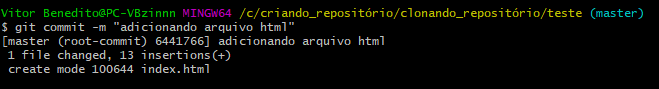
- Após adicionar e comitar todos os arquivos utilize o comando " git push ", para adicioná-lo ao repositório do GitHub. E pronto! Parte II finalizada com sucesso.
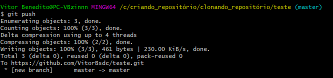
PARTE III
- Volte ao repositório no Github e vá a aba "Code", veja que os arquivos adicionados estarão lá e comitados.
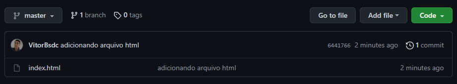
- Agora acesse a aba Settings e selecione "Pages", no menu lateral.
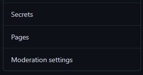
- Selecione o botão com a informação "None".
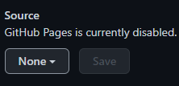
- Selecione a opção "master".
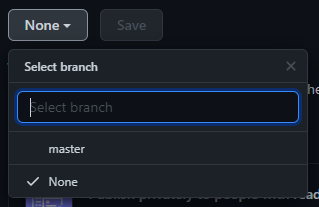
- Após selecione a opção "Save".
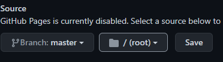
- Por fim espere a publicação do pages e fim. Sua página estará disponível para acesso de qualquer lugar do mundo!
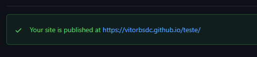
PARTE IV
Veja o vídeo abaixo para melhor entendimento e esclarecimento de dúvidas.